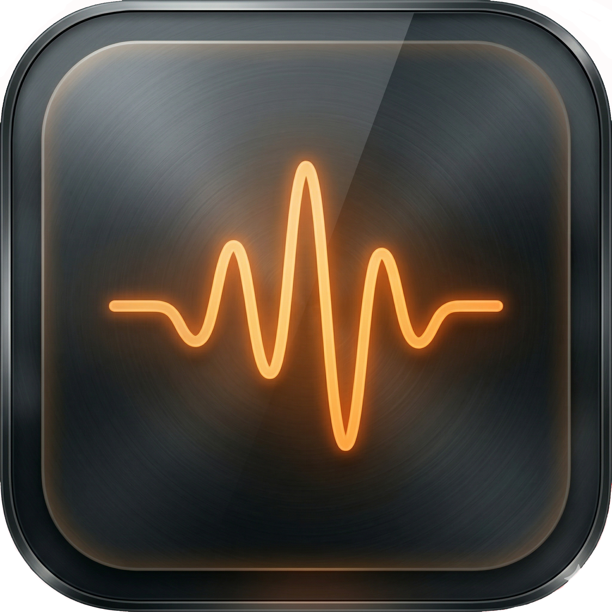
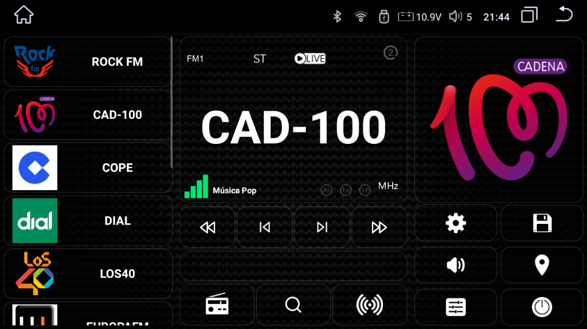
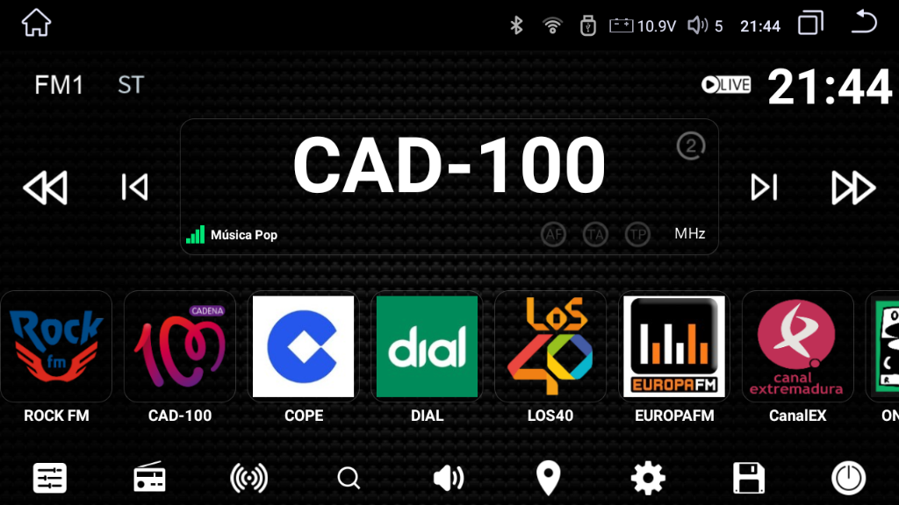

OPENRADIOFM
Votre Radio, Vos RèglesPersonnalisez l'instrumentation de votre véhicule avec une puissance de bas niveau. Extrayez le firmware, auditez le RDS et prenez le contrôle total. Optimisé pour les écrans 1024x600 et plus.

Caractéristiques Premium
Personnalisation extrême pour votre radio. Votre style, vos règles.
Logos Personnalisés
Gérez les logos des stations. Téléchargez vos propres designs, logos de marques et arrière-plans dynamiques avec effet de flou.
Édition RDS Avancée
Décodage et édition des données RDS en temps réel. Personnalisez les noms des stations et le texte PS/RT avec précision.
Crowdsourcing Cloud
Contribuez à la communauté. L'application télécharge automatiquement les données pour que tout le monde ait des logos HD mis à jour.
12 Langues
Interface et manuels en Espagnol, Anglais, Russe, Français, Allemand, Italien, Portugais et plus.
Thèmes V.4
5 polices premium. Mode nuit avec teinte bleue automatique.
Contrôle Total
Accès bas niveau pour une personnalisation extrême. Paramètres esthétiques et fonctionnels avancés.
v5.0 Galerie de Captures

Layout V2 - Mode Night Blue
Interface optimisée pour la conduite nocturne avec des tons premium.

Layout V3 - Standard Premium
Visibilité RDS maximale et réglage haute résolution.
Présentation V5 & Guide des Logos

Présentation de lancement V5
Fonctionnalités clés et améliorations de stabilité de la nouvelle version V5.0.0.

Guide du système de logos
Comment gérer les logos en ligne et manuels dans le système hybride.
OpenRadioFM en Chiffres
Roadmap V.5
Actuel - V5.0.0 (Stability Beta)
Logos de la communauté, fix audio MTK8259, Shadow Motor QS6 redondant et stabilité maximale.
100% complété - Disponible maintenant!
Spécifications Matérielles
- Matériel: Compatible MT8163, K706, et Radio NWD G5 (QS6).
- Résolution: Optimisé pour 1024x600 et plus.
- Puce Radio: NXP TEF6686 avec support RDS complet.
- Firmware: Android 8.1+. Racine recommandée.